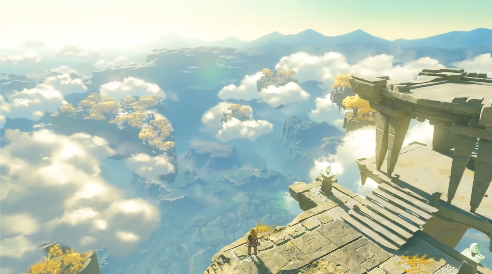
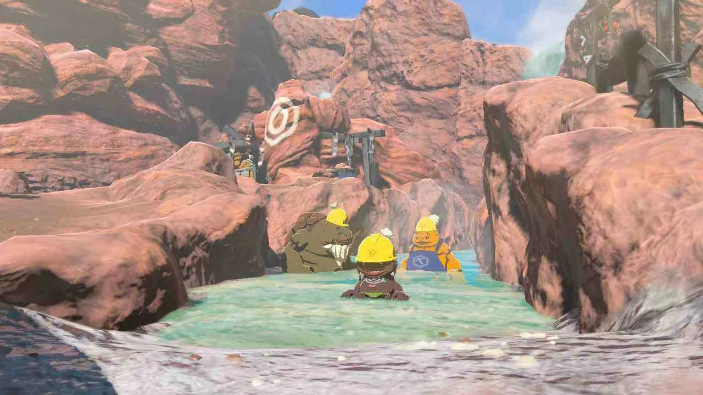
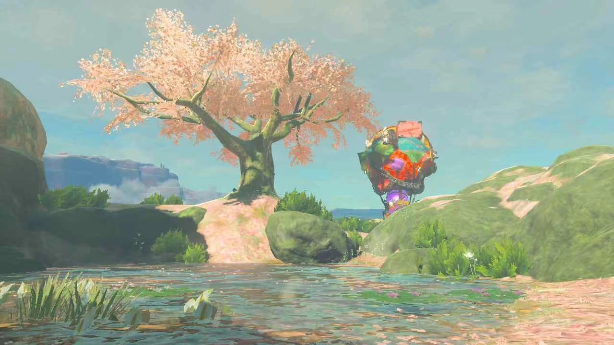
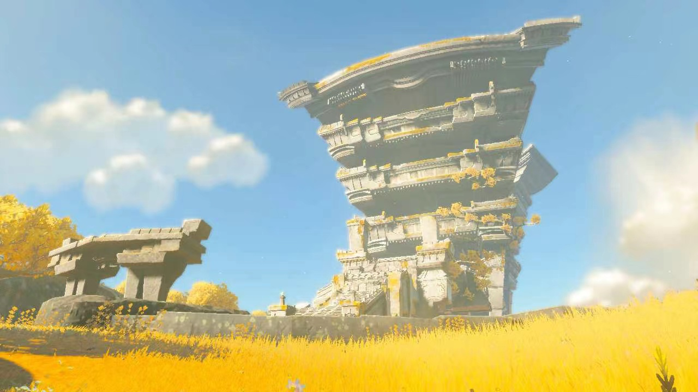
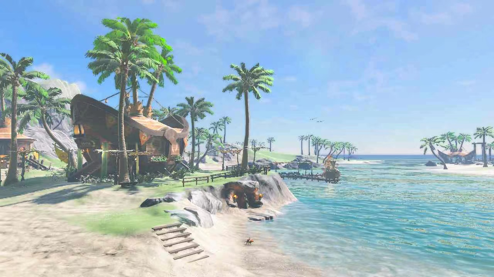
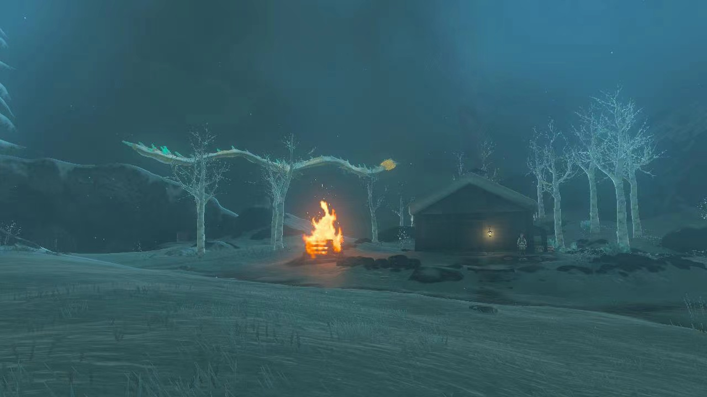
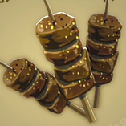

Hyrule
Welcome to this historic magical continent. The beautifully untouched snowy mountains, rainforests, waterfalls and volcanoes are waiting to be explored...but do watch out for the wandering monsters! Click here for the map
Top Attractions
-
- Goron City
Nestled at the foot of a volcano,
the city is famous for its open-air
hot springs and barbecues. Don't
miss the Simmerstone Springs
(recommended by locals) to heal
your body and mind in the steaming
heat. The people here are as
passionate as fire too!

Go to last slide
Go to next slide
-
- Satori Mountain
Come here to see the most beautiful cherry blossom tree in the entire continent. Located in the southwest of Hyrule, Satori Mountain is a natural reserve for flora and fauna.
It is said that by offering a piece of
fruit to the altar on the mountain top,
you will be blessed by the mountain.

Go to previous slide
Go to next slide
-
- Temple of Time
Behold, the spectacular clock tower from 10,000 years ago. History is
touchable here. Since it's located on
the sky island, you can look down on
the entire continent or even bungee
jump. Hopefully you're not afraid of
heights!

Go to previous slide
Go to next slide
-
- Lurelin Village
It has a intoxicating tropical scenery,
as well as the most welcoming and
friendly villagers. You may enjoy the
sunrise at the beach at 5 a.m., savor
the local specialty of seafood risotto,
and take a salt bath at the inn. It's a
perfect place for vacation.

Go to previous slide
Go to next slide
-
- Hebra Mountain
Hebra Mountain is famous for its ski resorts, but do you know that it is also a destination for explorers?
In addition to the dangerous climate,
there are intricate caves, mysterious
treasures, as well as wandering
monsters. Remember not to mess
with moose and grizzly bears!

Go to previous slide
Go to first slide
Tips
- Climate is distinct in each region, stay warm and be careful of heat stroke
- Watch out for the fierce wild
animals
- Stay away from the monsters' lair
- Horses can be rented at the
stagecoach station
- Take enough food with you
whenever you go out
Local Cuisine

Gourmet Spiced Meat Skewer